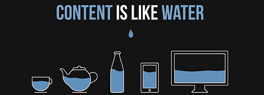
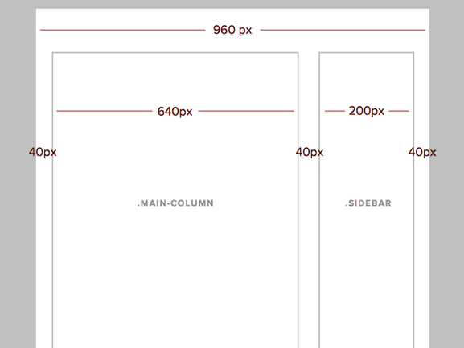
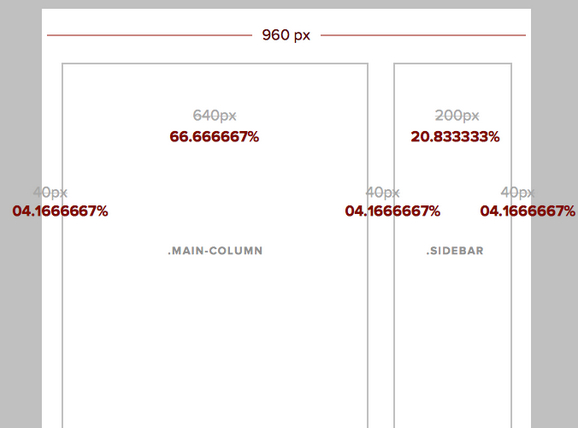
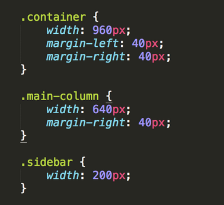
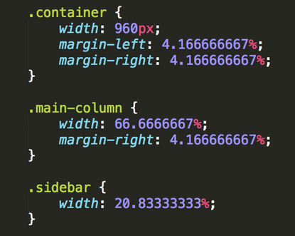
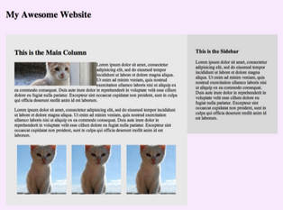

Intro to Responsive Web Design
Updated 7/18/2014
Oh hai!
Instructor: Cecy Correa, @cecycorrea
Contact: cecy@girldevelopit.com
Awesome TAs:
- Mae Reed, @maebees
- Flip Stewart, @flipstewart
Intros!

Rules
- Don't be afraid to ask questions
- Help each other out
- Have fun!
Why is Responsive Design important to you?
Definition
Responsive web design is an approach to web design in which a site is crafted to provide an optimal viewing experience—easy reading and navigation with a minimum of resizing, panning, and scrolling— across a wide range of devices (from desktop computer monitors to mobile phones).
The content adapts
"Fluid layouts"
How does it work?
- Fluid grid
- Flexible media
- Media queries
Rethinking the mobile web
Presentation by Bryan Rieger (2010)
Slide 56
Let's review!
Desktop first?
Design desktop site first?
Add @media queries?
Noupe.
Mobile first!
Design mobile first?
Add @media queries?
Progressively enhance the experience?
Remember!
The absence of support for @media queries is in fact the first @media query.
Slide 79
Resources
Class links: cecy.co/rwd-gdi-links
Fluid grid
Fluid grid
- Define container widths as % not px
- This percentage will represent the width of the containing element, which means it will reflow according to viewport widths.
Fluid grid
Formula: Target / Context
Wherein...
- Target is the div you want to find the % of
- Context is parent div
- Result is width as %
Fluid grid
Fluid grid
Target = 640, context is 960
What will the percentage be?
Answer: 66.666666666667%
Fluid grid
Let's turn the rest into %
Fluid grid
Let's turn the rest into %
Fluid grid
Fluid grid
*Round up to 4% to make it fit
Fluid grid
How do we turn the Context into a %?
Fluid grid
We could...
.container { width: 100%; } Let's see what that does...
There are some issues, a little stretched out...
Fluid grid
Let's try....
.container { width: 100%; max-width: 960px; } Much better!
Flexible media
Flexible media
Videos, images, etc.
The secret again is using %
Flexible media
Secret sauce:
img { max-width: 100%; }Flexible media
Let's add images to our practice site!
img src="http://placekitten.com/700/200" alt="kitten"Flexible media
Now, let's add...
img { max-width: 100%; }What if we want to make it smaller?
Flexible media
Add a class to it!
.cat { width: 50%; }Develop it!
Add 3 cat images to your site, make them sit side by side using %

Media queries!
Allow you check for capabilities of a device, like:
- Width
- Height
- Orientation
- Resolution
- ...and more!
Media queries!
@media allApplies to all media types: screen, print, tv...
Media queries!
@media screenThe one you want to use! Browsers and mobile devices are in this category. Excludes print, etc.
Media queries!
@media printFor printers
Media queries!
@media handheldFor "handheld" devices. Not widely supported right now.
Media queries!
@media screen and (resolution: #dpi)For high resolution devices, like retina displays. You can use this to display higher res images to higher res devices.
So many!
@media all and (orientation: landscape)@media all and (orientation: portrait)There's even...
@media 3d-glassesIf you Google...
You may see...
@media only screen ..."Only" is used so older browsers ignore the code.
If you Google...
This will only work in devices:
@media screen and (min-device-width)This will work in your browser:
@media screen and (min-width)Develop it!
Add a media query to your site: make the background red at 600px.
@media screen and (min-width: 600px) { body {background: red;} }Fluid typography

Fluid typography
Not px but ems
Fluid typography
16px is default for browsers.
Target / 16px = em
Let's figure out our ems on our practice site!